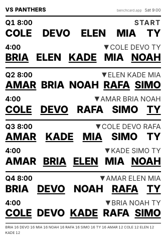
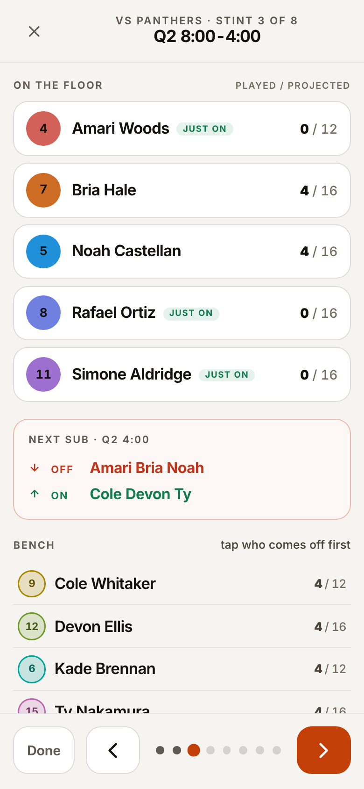

Benchcard is a free substitution planner for youth and rec basketball. Give it your roster and say how the minutes should be split, and it works out who is on the floor for every stint, then prints it on a card that fits in your pocket.

Eleven kids, forty player-slots, and no way to divide one by the other.
The plan · 11 players · 8 stints of 4 min
You have eleven kids and a thirty-two minute game. Five are on the floor at a time, so there are forty player-slots to hand out, and forty does not divide by eleven. Somebody is getting more and somebody is getting less, and the parents in the third row are counting.
Most coaches do this in the car, on the back of the schedule, five minutes before tip-off, and then lose track by the third quarter. A substitution plan is not a thing you can hold in your head while you are also coaching. Benchcard does the arithmetic once, honestly, and hands you a piece of paper that tells you what to do at every whistle.
Five steps, and the fifth one is the game itself.

Games do not run to plan, so bench mode lets you change one. Tap whoever is coming off and say how long they are out for: one stint, the rest of the game, or sit them and let everyone else absorb the minutes. The stints that are left are worked out again around it, nothing already played moves, and one tap puts the printed plan back.
Four sample players, one game, four different shapes. The number on the right is what that player ends the game on.
Everybody plays as close to the same number of minutes as the clock allows. This is what most rec and youth leagues expect, and it is the right answer if you are not sure.
You set each player's total yourself and the plan hits it. Useful when somebody has to leave early, is easing back from an injury, or a parent has asked for something specific. The totals always add up to the whole game, so giving one player more takes it from the others, in front of you rather than by accident.
Even minutes for most of the game, then a group you pick stays on to finish. For the games that are allowed to matter.
Two or three fixed fives that swap as whole units. The easiest thing to run from the bench and good for the youngest ages, but the minutes only come out even if the groups themselves are even.
A five-step level per player on the Team page, and one choice per game about where your strongest lineups fall.
Even minutes decides how long everybody plays. It says nothing about who plays together, and five players picked purely for fairness can be your five youngest all at once. That is the moment most coaches give up on even minutes altogether.
So you can give each player a rotation level on the Team page, once a season rather than once a game, and Benchcard keeps the lineups from tipping. Everyone’s share of the minutes is still worked out without the levels: they change who shares the floor, not how long anyone is on it.
Team · rotation levels
Then, beside the plan for each game, you choose the shape. Which end of the game your stronger lineups fall on is a call about tonight’s opponent, not about your team:
A level is a note about your rotation, not a rating of a child: it lives on the Team page, and it is never printed on the card, never shown in bench mode, and never included when you share the card as an image. And the whole feature is off until you use it. Every player starts on the middle level, so every five is worth the same and the plan you get is exactly the plan you got before.
Each one reads back as a sentence, and the plan is built around all of them at once.
This game · rules
Rules are things that have to be true; everything else bends around them.
One of these is worth setting once rather than per game. If your league says everyone plays a minimum, the Team tab holds a floor for the whole team: Everyone plays at least … min. It reaches every available player in every game, so you do not add a rule each time.
And, once you have finished a few games, a season that remembers who has been short.
Add a second game and it copies the format, who is at the gym and your rules. Only the opponent and tip-off are new. From there the day balances across every game by default, so a player who sat more in game one gets it back in game two. Turn that off and each game is fair on its own. A running total shows where everyone stands.
A season works the same way over a longer clock. Finished games are filed into a ledger, and the per-game switch Even out the season so far opens each player’s minutes ahead or behind by how far they are off their share of everything played to date. The adjustment is at most two stints either way, and never over a limit or a locked number. It is off unless you turn it on, and the numbers it handed the plan are printed underneath it, so a target never moves without saying why.
One block per substitution, and nothing on it you have to decode in a hurry.
Each block is one substitution. On the left is the clock: Q2 8:00 means eight minutes left in the second period. To its right, ▼ lists who is coming off. Underneath are the five who are on the floor for that stretch, and the underlined names are the ones who just came on. START is your opening five; NO SUBS means nobody changes at that break. Print it pocket size for a notebook, or half-sheet if you carry a clipboard.
The card block by block, in both sizes
Your roster and your players never leave your device. Benchcard runs entirely in your browser. Your roster, your games and your rules are stored on the device you typed them into. There is no account and no server holding your team, so clearing your browser data clears it too. The site counts anonymous usage (page views, and which features get used) so I can see what is worth building next; those are counters only, never a name, a team or an opponent.
Stop thinking in players and think in stints. A 4 × 8 game with a change every four minutes is eight stints of five, which is forty player-slots. Eleven players share forty slots, so each gets three or four: seven on sixteen minutes and four on twelve. You could close that gap to seconds, but only by subbing at odd times like forty-four seconds left in a quarter and running lineups straight through the buzzer, and nobody is doing that from a card in a gym. So Benchcard subs on the interval you chose, never carries a stint through a period break, gets everyone on before halftime where the sub schedule allows, and remembers which four were short. Turn on the season switch and the next plan opens them ahead, at most two stints either way. Keeping that straight across a season is the part a phone is better at than a parent under pressure.
Yes, and there is no account. I write software for a living and coach a sixth-grade team, and working the minutes out was the part I dreaded: a spreadsheet I kept rebuilding, or twenty minutes with a pen before every game. I wanted something that just did it, so I built one. If it is useful to you too, there is a tip link here and in the app.
No. Everyone starts on the same level and the plan is the same as it would be without the feature. It is there for the coach who wants even minutes and a competitive five on the floor, and it stays on the Team page: never on the card, never in bench mode.
Yes. Once the page has loaded it needs no network, and you can add it to your home screen so it opens like an app. The card is on paper anyway.
It is saved on this device rather than on a server, which is the trade for having no account, so the risk is the device, not an outage. Two things cover it. Add Benchcard to your home screen and the browser will not clear it to free up space. And Settings can write a backup file with your roster, your rules and the season ledger in it, and read one back in the same panel. Worth doing once at the start of a season, and again any time you would hate to lose the ledger you have built up.
Mark who is actually at the gym before you build the plan, or give that player a minutes ceiling. Mid-game, bench mode lets you swap anybody and re-checks the stints that are left.
The scheduling works for any sport with a fixed number on the floor and a running clock. The problem is the same one. What is basketball is the vocabulary, the card layout and the defaults: five on the floor, four periods, eight minutes each.
Five or more. Below five there is nothing to plan; above about fifteen the minutes get thin enough that you will want minute floors rather than a pure even split.